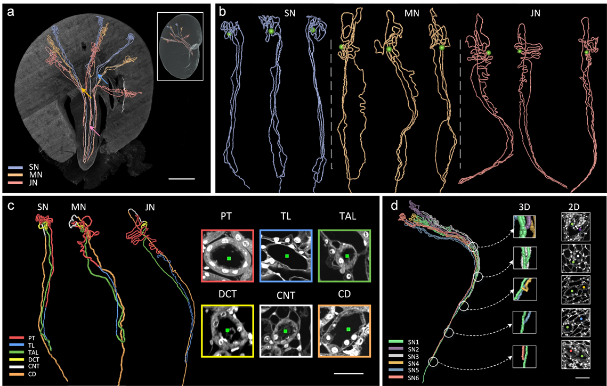

Independent observed specimens · regional anatomy
One organ, several scales
Locate cortex, pyramids and sinus in an adult renal ultrasound. Then inspect author-reconstructed tubules and actual optical sections from a prepared mouse kidney. These are independent specimens and modalities: the second image is not a zoom into the first.
Adult kidney: read the source marks

* Column of Bertin: cortical tissue between pyramids.
** Medullary pyramid.
*** Cortex: peripheral parenchyma.
**** Renal sinus: central echogenic region.
+ ··· + Author kidney-length caliper, 13.36 cm.
Focus the image region to pan with arrows, Home/End or Page Up/Down.
Hansen, Nielsen & Ewertsen (2016; online 23 December 2015), Ultrasonography of the Kidney: A Pictorial Review, Figure 1, CC BY 4.0. Exact published-PDF image, 887×601 pixels; no resampling, relabelling or color edits. Printed 110 mm, about 205 ppi.
Mouse nephron: reconstructed course and observed walls

The full source above retains panels a–d. The detail below is the complete lower-left panel c, including its source key and 30 µm bar for the two-dimensional optical sections.

PT · red
Proximal tubule.
TL · blue
Thin limb.
TAL · green
Thick ascending limb.
DCT · yellow
Distal convoluted tubule.
CNT · white
Connecting tubule.
CD · orange
Collecting duct.
SN / MN / JN: superficial, middle and juxtamedullary examples, classified by glomerular location. Green dots mark traced glomeruli. The colors show author-assigned segments, not intrinsic tissue color. The neighboring microscopy fields show morphology used during tracing; they do not locate molecular transporters or show transport in motion.
Li et al. (2024), Precise reconstruction of the entire mouse kidney at cellular resolution, Figure 6, ©2024 Optica Publishing Group. Optica Open Access Publishing Agreement: noncommercial reuse and building upon with attribution. Exact PDF image 1139×725; detail is integer crop (0,365)–(715,725), 715×360, no resampling or color edits. Printed detail 145 mm, about 125 ppi: source-limited, with original labels/bar retained and a readable external key.
Specimens, preparation, component rights and crop record · Reproduction and exact hashes.